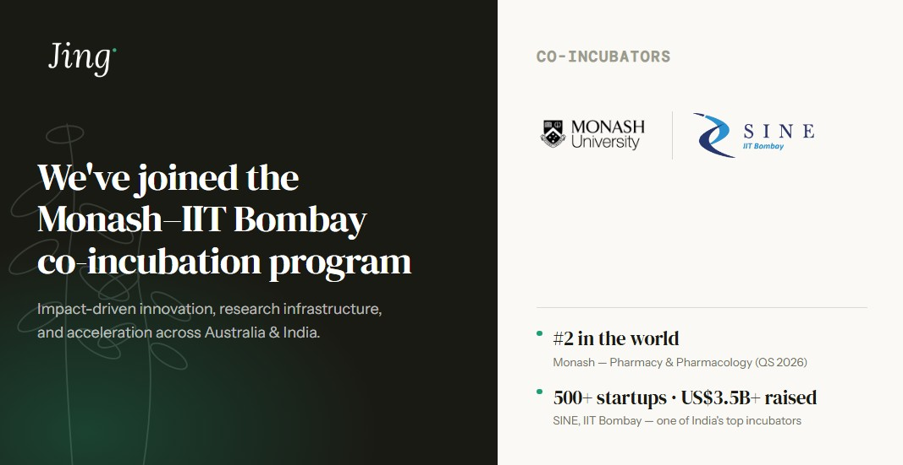

We've joined the Monash–IIT Bombay co-incubation program
By the Jing team · 12 June 2026 · 5 min read

Review Confirm permission to name Monash University and SINE, to use their logos, and to quote their rankings, before launch.
Jing Herbal has been selected to take part in the co-incubation program run by Monash University and the Society for Innovation and Entrepreneurship (SINE) at IIT Bombay, accelerating start-up and academic spin-out collaboration across borders.
Designed to accelerate innovation between Australia and India, the initiative gives emerging health and advanced manufacturing ventures access to world-class research, facilities and industry connections. For a Melbourne-based brand, it opens doors normally available only to large, well-funded companies.
What the program gives us
Research infrastructure. Access to facilities and academic expertise for the unglamorous but essential work behind every claim we make: testing, substantiation, quality verification.
A bridge into India's startup and commercial ecosystem. Direct lines to leading experts in biochemistry, and to the supply chains of one of the most important sourcing regions in the world.
A network across two countries. Mentoring, and connections that span Australia's research strength and India's startup energy.
Why India matters for what's in your cupboard
Traditional herbs have always crossed borders. Some of the botanicals the world now associates with wellness, such as turmeric, ashwagandha and bacopa, have their deepest roots in India, where growing conditions, plant varieties and centuries of cultivation knowledge produce something you can't replicate elsewhere.
Lakadong turmeric, for instance, carries some of the highest natural curcumin levels found anywhere. This program puts us closer to finding the best herbs at their source.
Why we said yes
We've built Jing on a simple principle: every ingredient should earn its place, and we should be able to show our work. That principle only means something if the people checking it are the best in the field, which is what this program puts within reach.
Monash is home to one of the world's leading pharmacy and pharmaceutical science faculties, ranked #2 globally for Pharmacy and Pharmacology (QS World University Rankings by Subject 2026). SINE brings the other half: one of India's most successful startup incubators, where more than 500 startups have come through its programs and collectively raised over US$3.5 billion in external capital.
What this means for you
Nothing changes overnight; good sourcing is patient work. Over the coming months, this is the engine behind the next chapter of Jing: botanicals sourced from where they grow best, and the research that lets us tell you exactly why each one is there.
That's always been the promise. This lets us keep it better.
— The Jing team